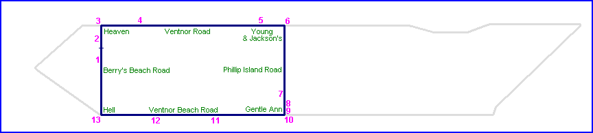
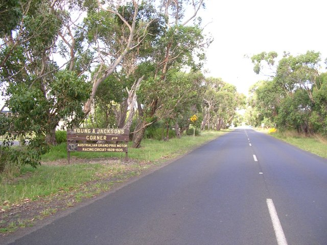
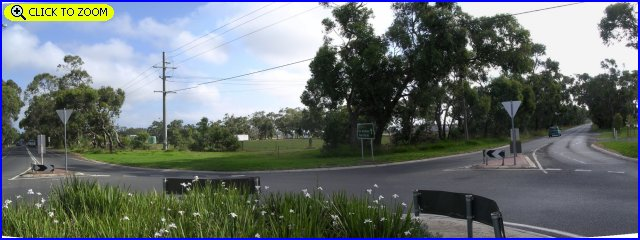
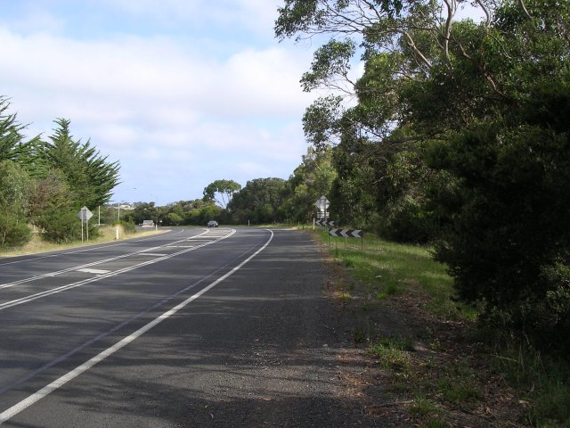

1 - Start/Finish area on Berry's Beach Road.
Phillip Island (1928-35 Grand Prix circuit) - Berry's Beach Rd. to Phillip Island Rd.
|| Contents || Berry's Beach Rd. to Phillip Island Rd. | Gentle Ann Corner to Hell Corner || Home ||

Numbers on the map represent the location where the photographs were taken. Scroll
down to view the photographs.
Return to racingcircuits.net's Photo Archive Main Index
1 - Start/Finish area on Berry's Beach Road.

2 - Approaching Heaven Corner.

3 - Heaven Corner. [Click here to zoom in]

4 - Ventnor Beach Road.

5 - Approaching Young and Jackson's corner.

6 - Young and Jackson's corner. [Click here to zoom in]

7 - Phillip Island Road realignment approaching Gentle Anne corner. The
original road went straight on at the black and white signs.
Photographs and Text ©Neil Fackerell. Reproduced here with kind permission.